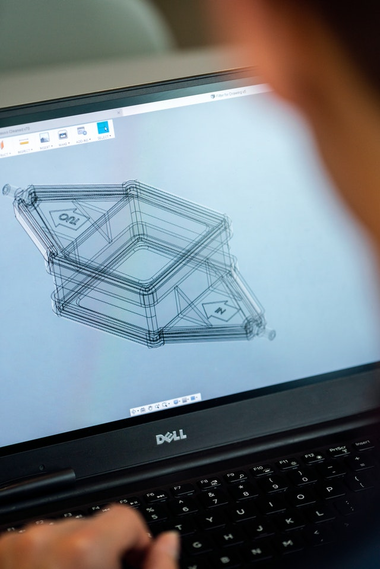

Cristiano Santana
cristiano_santana@live.com

Técnica
Formado em Engenharia Mecânica e Técnico Mecatrônico, com conhecimentos aperfeiçoados em modelagem 2D e 3D, Excel Avançado, Gestão de projetos. Interessado em tudo que fale sobre Tecnologia e Automação.

Habilidades
Conhecimento das Ferramentas AutoCad, Solidworks, Inventor e Excel. Habilidades que estou aprendendo no momento: Liguagem de programação JavaScript, Python, Java, PHP, também em html e CSS. Softwares como VisualStudio Code, PyCharm, Netbeans, Creo, Ansys e Project.

Ética
Procuro ser analista e ter senso crítico, gosto de manter a comunicação como feedbacks por exemplo. Gosto de resolver desafios, discutir opiniões e compartilhar aprendizados. Tenho bom humor e procuro tratar todos com respeito e ética.